Unfiltered evidence of plagiarism, distortion, and abuse of Vajrayana teachings; conclusively affirmed through desperate deletions by the abuser of Buddhadharma and public trust itself.
♣
Imagine a stadium filled with 21,000 cheering fans. Now imagine that, after eight years of concerts, only a handful actually exist — the rest are holograms projected by the organizer’s clever tricks. Welcome to the Facebook page of Adele Tomlin in question. Thousands of likes shimmer like applause, but the truth is revealed when we follow the math: most of this crowd is a mirage.
Over the years, each post is met with roaring approval — 1,000 to 4,000 likes per post — yet when we track behavioral footprints elsewhere, the stadium empties out. Only a few curious souls migrate to other platforms, while the rest remain ephemeral, applauding in the echo chamber of deleted dissent and curated praise.
Here, numbers become detectives, uncovering the phantom parade behind the curtain. This isn’t just math homework — it’s a forensic audit of attention. Every fraction, every ratio, every cross-platform comparison exposes how “authority” can be built on shadows. Buckle up: what you see on the Dakini Translations page is more fiction than fact.
Thousands of likes. Eight years. Almost no real humans. The crowd exists — but only in the imagination.
Since it is in the best interests of Adele Tomlin to inflate digital signals to appear authoritative on its platforms, only unaffiliated YouTube critique channel is used in our investigation. This ensures raw data are free from any manipulation. Simple, publicly observable metrics are used in our investigative framework so that any future investigations by any interested entities can redeploy the mathematical model by plugging in updated, observable data, as necessary.
In our investigation, we limit the number of posts to strictly those tied to its webpage dakinitranslations.com. The number of posts, assumed to be tied to 992 articles, is rounded to 1000 posts, a conservative assumption since actual sharing frequency is highly likely to exceed one post for every website article promoted on its Facebook. The actual dates April 19, 2018 and May 14, 2026 are taken from the sitemap itself, yielding 2947 days ≈ 8.07 years.
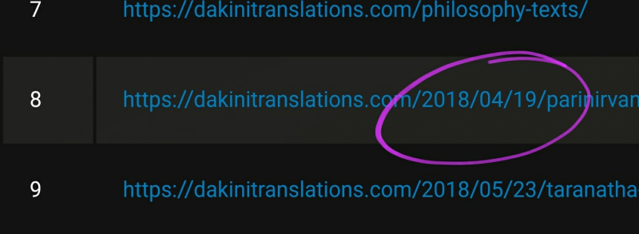
The likes are taken from the most recent posts in 2026, only those explicitly directing readers to its website, excluding personal rants, reels, etc. Based on past observations, likes could jump to 8K-12K. However, to maintain evidentiary faithfulness, we limit the range to 1K-4K based on readily verifiable recent data by anyone accessing the Facebook page. Some snapshots for researchers as reference.
For ease of calculation, the total views are rounded from 1238 to 1200 in 347 days ≈ 0.95 year. Starting date is counted from the first published critique video. Real-time data can be readily quoted from the channel page by any researchers for future investigations without access to our dashboard analytics.
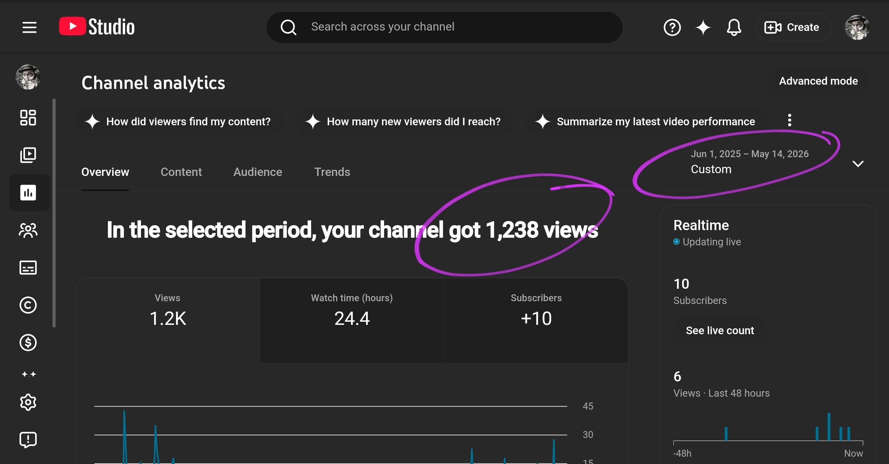
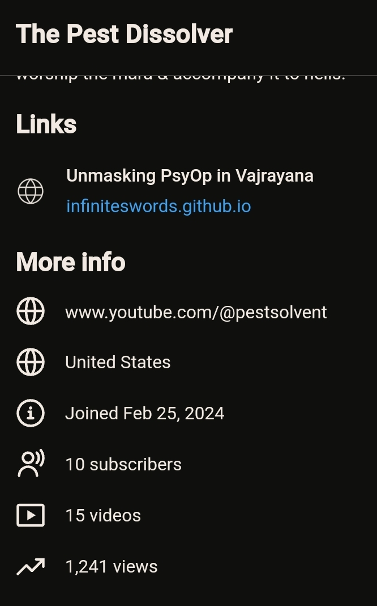
"First female-founded (and solo-authored) Dharma website resource by British scholar-translator-practitioner, Adele Tomlin, for original, new translations and research, music, interviews, talks, reels, poetry, transcripts on Buddhism and Vajrayana."
The page explicitly announces its structure being solely managed by a lone woman, but the Page Transparency reveals otherwise:

The page explicitly announces strict conformity policy: dissenting comments of any forms are treated as lack of compassion, harassment and bullying, thus deleted and the users blocked.
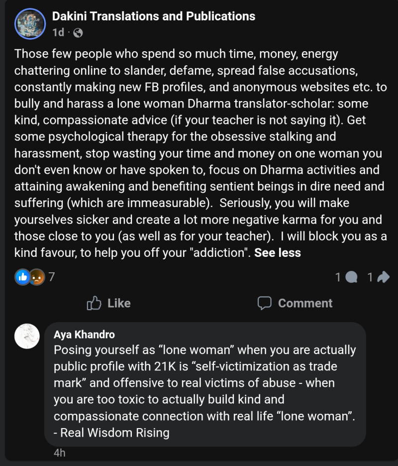
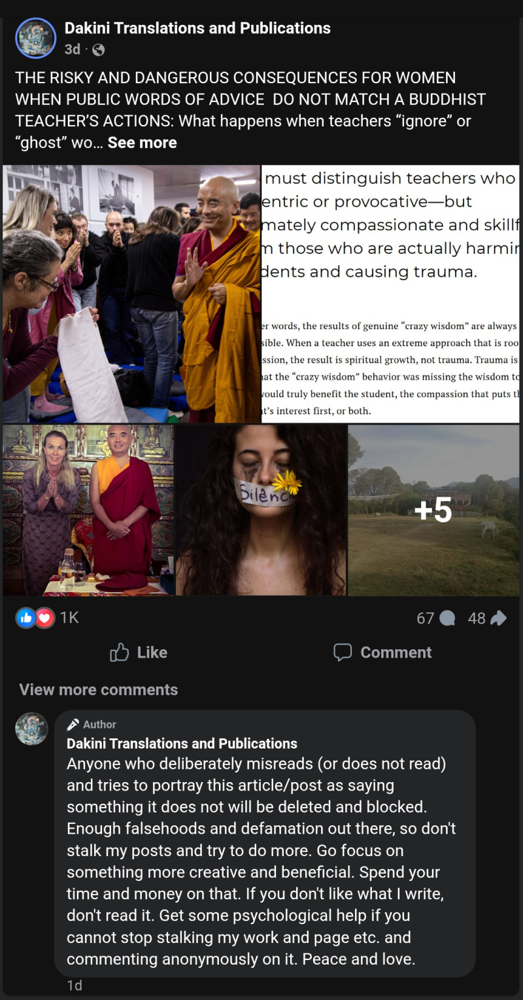
This introduces structural selection bias. Only praise survives. Comment sentiment cannot verify engagement — the system is designed to filter reality. No speculation. Pure fact.
Among floods of objecting comments that were deleted promptly, a few of them got saved and preserved here for the public to sense the actual sentiment of public reception. These photos are posted under the cluster of the Mingyur Rinpoche misleading post on May 9, 2026.
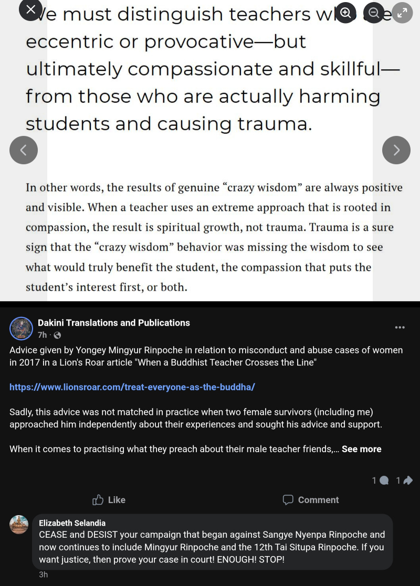
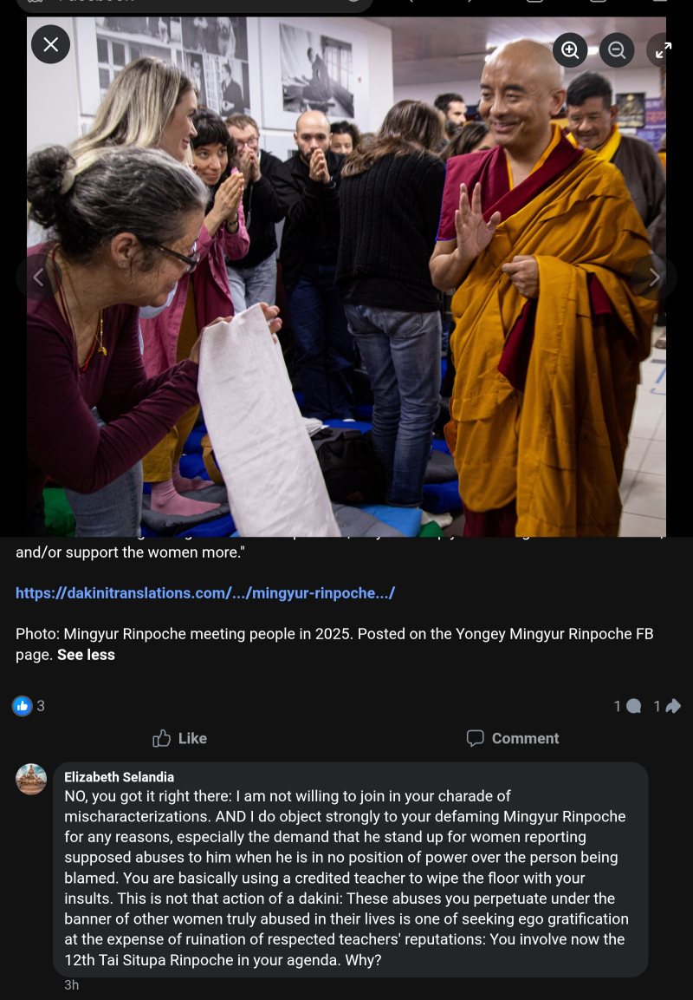
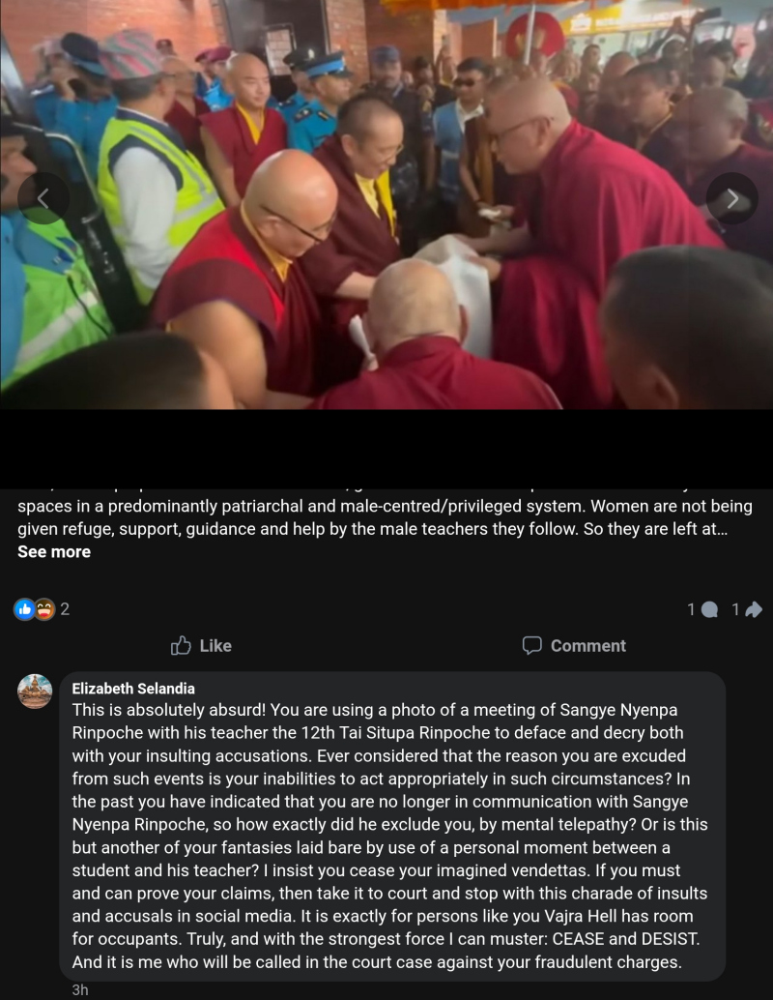
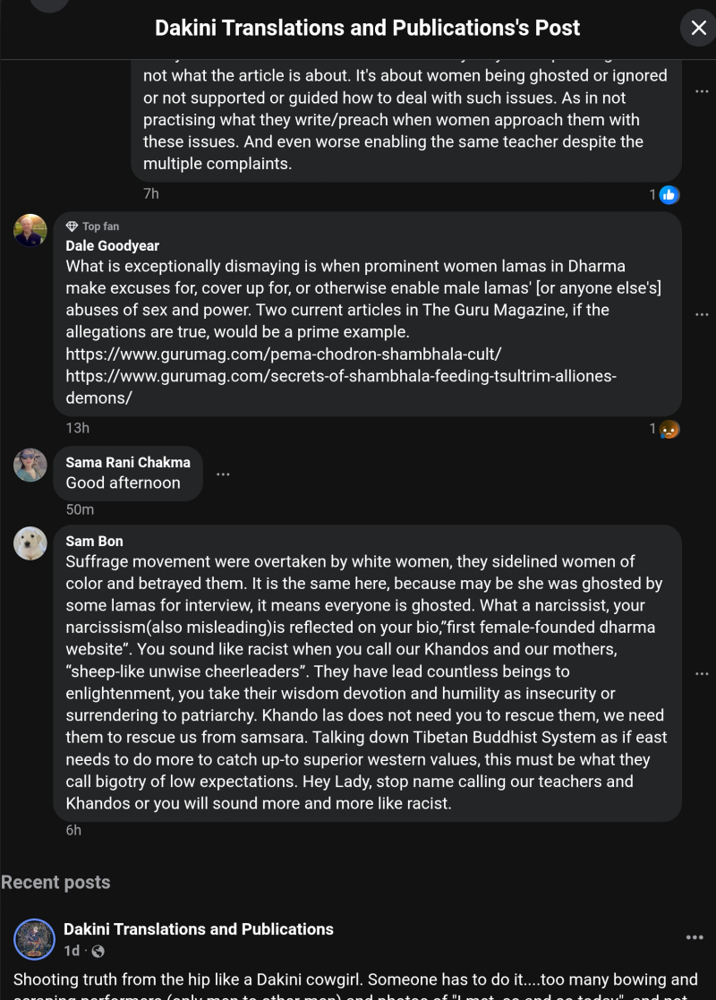
When even Facebook would censor comments deemed inappropriate by hiding them, Adele Tomlin not only preserves them but seeds public distrust by adding what it knows as unverifieable hearsays about lineage gurus. In this example image, a baseless sexual allegation against Mingyur Rinpoche.
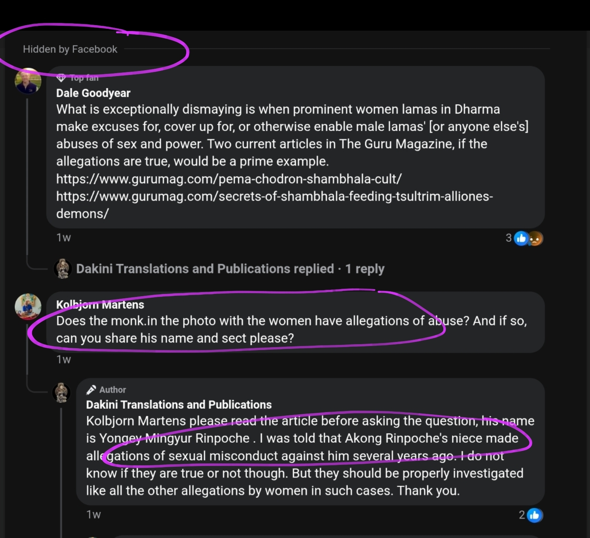
In fact, the deep unifying pattern found across its posts is the predictable use of the FOG (Fear Obligation Guilt) tactics to enforce readers' compliance, instead of rational reasoning. By obligation and guilt, Adele keeps emphasizing its position as a lone survivor woman. By fear, Adele frequently hints it is a reincarnation of many different great beings or consorts of realized masters. As seen in this image below with its recent post on May 15, 2026, implying itself a possible realized being not to be messed with, i.e. rationally scrutinized. Based on recurring distortive patterns unearthed through an audit of its website in 2025, it becomes difficult to continue accepting the label “Dakini Translations” at face value.
A fair challenge to neutral observers: Scrutinize its posts and try to find just one post that spreads positivity. You will find none! Even the post about advocating vegetarian is weaponized to seed hatred against non-vegetarian Buddhists (read: divide the Vajrayana Buddhist communities, one of the five heinous deeds according to the Buddhist framework) allegedly justified with hand-picked supporting quotes by the Karmapa, past lineage gurus, or historical figures. Even the Buddha did not shame meat-eating ever - not to mention as condescendingly, vindictively, self-righteously as Adele. Its Facebook page hosts an exclusive bigoted and hateful narrative rife with distortions that Vajrayana communities are unsafe places full of crooks and only Adele Tomlin is the purest being to judge, expose, and correct.
Engagement rate (ER) per post is calculated as reactions, comments, and shares divided by total page followers, expressed as a percentage. Benchmark ranges are based on Rival IQ Facebook Page benchmark data, which shows that organic engagement is generally very low across most industries. Median performance is typically around ~0.05%–0.10%, with ~0.10%–0.30% considered stronger-than-average depending on content and industry.
In our investigation, only reactions, i.e. likes, are used. Comments are excluded due to structural bias. So too are shares, because almost all posts pointing to its website have repeated shares by a few same people within minutes, if not hours, or days. These people can change over time. Many just vanish (i.e. accounts disappear) and are replaced by new people with similar sharing behavior. Here is an example of shares within seconds, if not minutes:
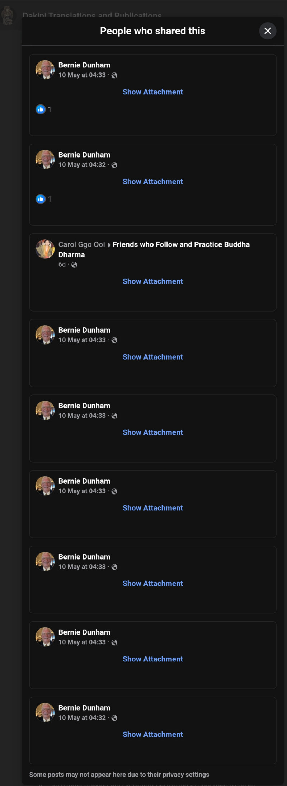
Insanely high. Does not pass even the basic sanity check. Swarms of gremlins drinking blood?! Extremely addictive posts? The expected moderate-to-strong engagement range would be 0.1%–0.3%, which means 21 to 63 likes max. Given its highly niched audience tightly anchored to self-endorsed personality brand, the lowest median performance of up to 0.05%, i.e. 11 likes, is already overperforming. Even this, if at all organic, should be variable across posts. Not constant. No accusation. No belittling. Pure fact.
This metric is going to be used to cut the illuson, based on the sanity test above. A redundant attempt to humanize a mutated alien, indeed. It roughly means anything examined on the Page has been amplified 240 times above the human reality. And if you are curious, the followers should be 21,000 ÷ 240 = 87.5 humans, if any.
Both methods arrive at identical values of 0.38%, which reinforces the coherence of our investigative framework with this Engagement Integrity Model. As microscopic as a little over 0.3% of Facebook interactions leave any footprint elsewhere. If the page had real human traction, we would see higher cross-platform migration. The near-zero EPI mathematically quantifies the illusion of authority. No defamation. Pure fact.
Real engagement ratio per year: 1,263 ÷ 309,790 ≈ 0.4%
Notice again, the value derived here 0.4% is still close to the value 0.38% derived earlier, solidly confirming the validity of our investigative framework Engagement Integrity Model. Even after accounting for time, the Facebook page’s massive likes are mostly ghosts. Even time does not work to its favor. Fact.
Now the final Engagement Persistence Index is 0.39%, the average of 0.38% and 0.4%.
Even with hundreds of posts, only ~5 real humans engage per year. Even a nobody's Facebook gets more attention than this! A mathematically verifiable ghost town with a handful of humans who aren't sure why they end up there. Indisputable fact.
Thousands of likes, but less than one actual human per post. Welcome to the apex of illusion!
With its own written confessions, how would Adele Tomlin argue in the court:
A deleted post by Adele Tomlin amplifying this problematic logic to its followers, as if defaming people irresponsibly online bears no serious legal consequences:
![Adele Tomlin committing offence contempt of court: People who have never (and would never) survive what I have, love to lecture and gaslight 'just take it to court' as if that is the easiest and quickest thing to do. It's expensive, time-consuming and depending on where one is, no guarantee of fair or due justice procedures either. One thing I realised is that most people simply do not have the money or time to start civil proceedings. So, even with a very clear cut case in their favour on the evidence, where the false allegations and lies can be easily disproven, the court and lawyer's costs prevent them from getting proper justice too.
Or they simply don't have the time or energy. And who can blame them when dealing with 'toxic' abusive, misogynist liars and hypocrites? Normally one never wants to see or speak to them again, for personal safety but also to steer clear of their bullying and deception. This is why survivors resort to public exposure as the quickest and most surefire way of having one's 'case heard'. In fact silence generally always helps the corrupt/abusers.
So anyone who says such a glib and unsupportive thing to me or any other survivor will be blocked. Go take your cold, unhelpful and uncompassionate advice somewhere else. No one is forcing you to read what I write, nor to stalk everything I say or do](images/20260511-adele-tomlin-deleted-self-incriminating-comment.jpg)
Now that the math has revealed the invisible crowd, you don’t need a PhD to expose the illusion. Next time you see a Facebook post boasting thousands of likes, do this simple exercise:
Here is an example. Adele Tomlin announced the opening of a Tibetan course on May 12, 2026, just a day after proclaiming its ruthlessness in blocking innumerable disobedient users to crush their conscience and annihilate their morality. It allegedly attracted 2.2K likes, way more than the post with Mingyur Rinpoche photo (i.e. overt intent to poison his image by use of poisonous baiting keywords in the post url: "mingyur rinpoche abuse women" despite the article has nothing about that), which purportedly attracted 1K likes, that triggered its announcement of strict moderation policy. Immediately after backlash, it proved its favorable public reception just by numbers, too overtly so. To override the public sanity with obedience. Even other Tibetan courses with more rigor and structure elsewhere do not attract that much interest like this tentative course with no dates. Most tellingly don't people search and look up the course instructor before liking it? 2.2K people liking this particular instructor yet nobody cares to check out the YouTube critique channel about that instructor. The total views of YouTube remains constant. This is exactly how this investigative framework, Engagement Persistence Integrity, becomes a logically grounded method in quantifying such blatant incongruency.
Now crunch in the number of likes and watch how appealing that particular post actually is to real human — and see the ghost crowd shrink!
Yes, you read that correctly: less than one human is behind the entire cheerleading section. The page’s authority is not just inflated — it’s a phantom parade. Quantified.
Thousands of likes, millions of ghosts, and almost no humans. Even the math refuses to lie. Impersonally proven by numbers.
If every single like were a ghost, and ghosts attended the page’s stadium eight years in a row, they would still leave no footprint on other platforms. Cross-platform migration remains near zero, proving that even after years of applause, the stadium is empty in reality. Welcome to a 21,000-fan illusion.
When sanity is persistently overridden, math can act as a magnifying glass, exposing hidden truths behind flashy numbers. Not all applause is real. Not all authority is earned. And not every crowd is alive. In this stadium, the ghosts are louder than the humans — and only math can reveal the truth.
Thousands of likes. Consistent. No variance. Eight years. Even math proves no meaningful human engagement for years. Millions of ghosts released into the public every year for eight straight years. Irresponsibly. Entitledly. Why is the refinery still operating? What exactly does that resemble? Isn’t it time for an exorcism? Question everything.
Given our analysis and mathematical findings via Engagement Integrity Model, Adele Tomlin is not a "narcissistic drama" but a calculated structure of systemic manipulation of public trust that has to be stopped. Its content can no longer be treated as "debate" but a hazardous material. You do not argue with a virus; you insulate the community and eliminate the source. Only terminal deplatforming can excise a malignant actor from the digital ecosystem. Once a platform’s security team labels an account as a "psy-op" or "fraudulent entity," the subject's identity is "blacklisted" at the hardware and IP level. Even if it attempts to return under a new name, the digital fingerprints of its previous operation will trigger an automatic purge. It ensures that the "Adele Tomlin" persona—and the deceptive machinery behind it, Dakini Translations and Publications—ceases to exist as a viable threat to the Buddhadharma and the public at large.
The statistical anomalies tracked above are not victimless engagement metrics. Our forensic tracking proves that artificial traffic and coordinated global admin distribution networks are being deliberately utilized to push high-liability, extrajudicial content onto public servers.
| Documented Blog Output | Statutory / Platform Policy Breach | Actionable Enforcement Vector |
|---|---|---|
| May 9, 2026 Article: Explicit admission of releasing private, leaked voice recordings of a third party without verified legal identity or consent. |
CRITICAL BREACH • Non-consensual biometric processing. • Violates UK GDPR & WordPress Private Information Policies. |
Submit a direct third-party privacy violation report using the WordPress Abuse Portal (wordpress.com/abuse) citing explicit data spoliation. Download/ copy-paste reporting template here. |
| Facebook Page Operations: Multiple simultaneous global administrators managing a platform under the guise of a "lone woman." |
MISREPRESENTATION • Coordinated Inauthentic Behavior (CIB). • Violates Meta Page Transparency Policies. |
Report the Meta/Facebook business page asset using the "Fake/Misleading Representation" reporting workflow. |
| Public Rants & Response Articles: Actively inciting a digital crowd to privately circumvent courts and hunt down anonymous critics via private DM. |
HARASSMENT TANDEM • Direct incitement of **Doxxing**. • Violates the Protection from Harassment Act 1997. |
Can be cited directly in law enforcement cyber-harassment dossiers and international civil injunction applications. |
📣 Reporting Protocol: When submitting complaints to regulatory bodies or hosting infrastructure, avoid religious terminology or narrative debates. Utilize this table and our data logs to present a clean case of documented policy violations.